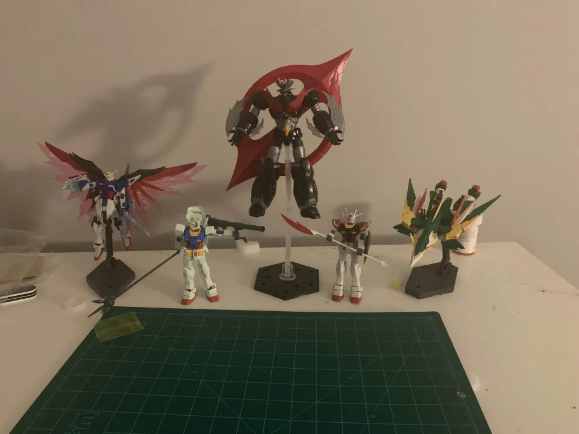

My name is Christiaan Thomas, but most refer to me with Kailani or Kai. My family is from Jamaica, but I was born and spent most of my life in Jacksonville. I was originally an Electrical Engineering student at UNF but currently pursue a degree in Information Technology. My reason for the switch involved the fact the only course I truly enjoyed my first year being Programming 1, as well as the fact I would be partially correct in saying learning physics sent me to the hospital.
I currently work with the 100 Black Men under their Mayor's Youth at Work partnership. Since February 2022 I've been working with them as an intern for a number of tasks. Currently, we have gotten into the development of artificial intelligence, particularly for the sake of automation. Apart from this, I've also done a number of 3D art and composition projects.
During summers I sometimes go to a Christian youth camp in Chapelton, Jamaica to volunteer. I'm not too good with children so I often end up being a general assistant for the directors of the camp, but a few years ago I did work with a group to teach music and perform at the end of the week.
My primary hobby has always been gaming, from having nothing more than a kindle playing gameboy emulators to a laptop built especially for running high graphics video game content. But really, most of my favourites have had a tendency to be titles played on Nintendo's Switch console. My all time favourite being the Xenoblade Chronicles series, particularly one and three. I have yet find time to play the other two in the series, but they are somewhere on my list. Other games I've been enjoying recently are detective-style stories such as Duck Detective, party-based roleplaying games such as Metaphor: ReFantazio, and pure action or stealth-focused games such as Horizon Zero Dawn.
But recently I've really gotten into building Gunpla, or gundam model kits. It has become a time-consuming yet relaxing hobby if I need to forget about the world for a few hours. My most recent build has been a Barbatos Lupus, but my absolute favourite to work on was the Mazinger Zero Infinitism I found at hobby lobby on sale (seen in the middle of the image below). As seen in the image, it is noticeably larger compared to my other simpler builds.
As mentioned before I also do 3D art and music. My primary software programs that I've been practicing in are Blender & FL Studio. My focus for both of these has always been for the sake of usage in various types of games, thus I also have experience in the Unity game engine. I really don't wish to make a career out of either of these assuming I build my skills enough, and would rather they remain separate, but I do hope to acquire greater reach with time.
Below are a few of my works. One using Blender and another using FL Studio:
From 2019 to 2023 I attended Paxon School for Advanced Studies in their International Baccalaureate program. I also received credit for an FSCJ college course back in middle school. While I believe these experiences were valuable, I would say I only truly began working towards my career goals when I attended UNF the fall after my graduation. A big reason I chose the Information Technology degree was a fascination with the field of cybersecurity, especially when it came to red team tasks such as penetration testing. That being said, I've also had eyes on AI and web development as I've started to learn more about it. If my plans did ever change, I believe it would be in that direction.
I'm currently looking to become A+ and Network+ certified with CompTIA by the time I graduate. Additionally, I have also considered pursuing a masters to further expand my knowledge.